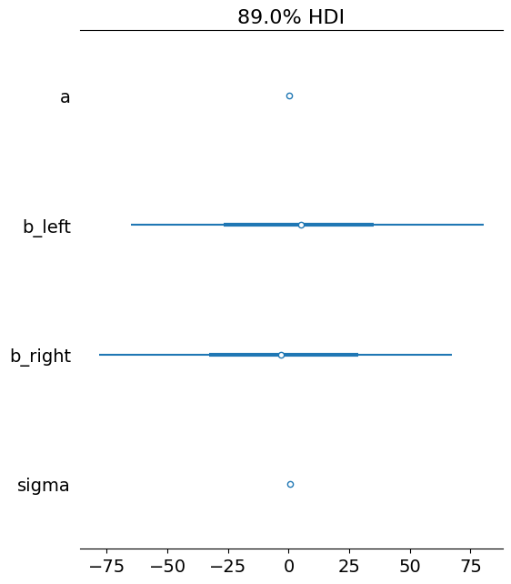
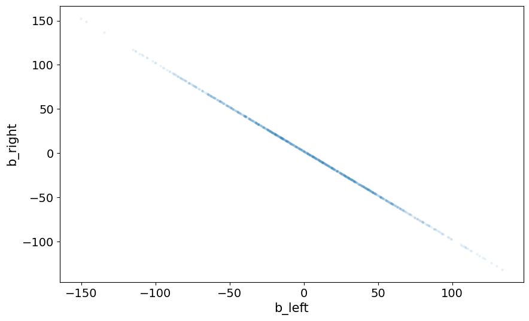
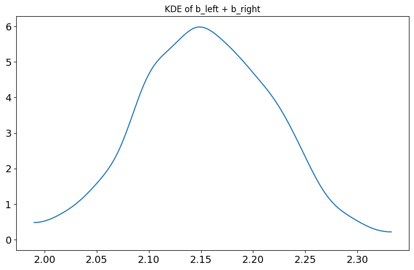
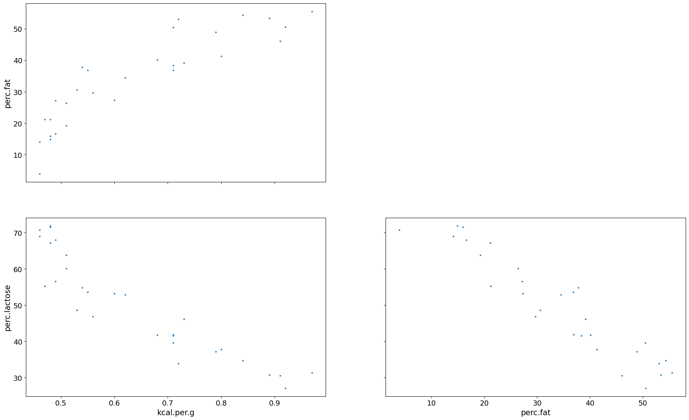
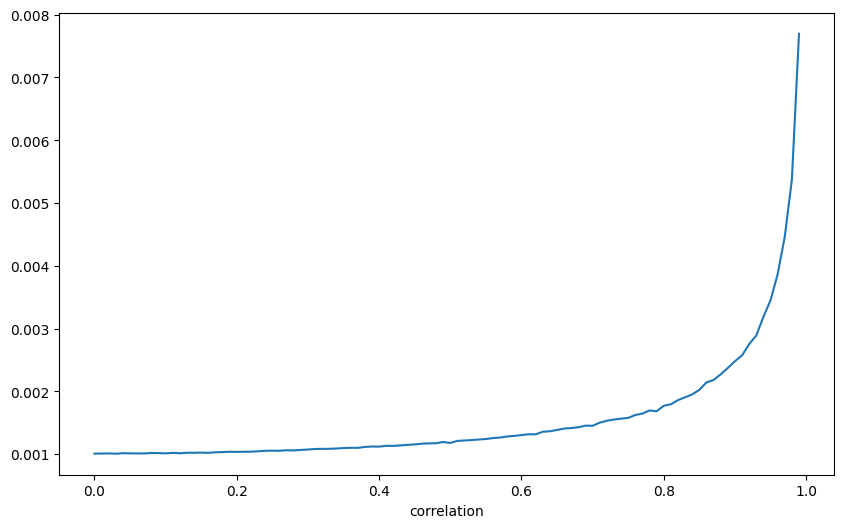
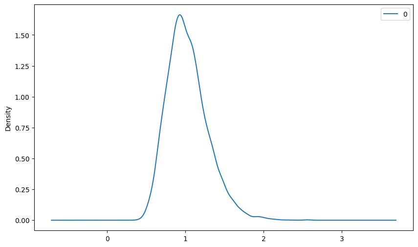
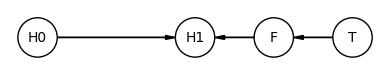

Chapter 6: The Haunted DAG & The Causal Terror¶
[1]:
%load_ext jupyter_black
import collections
import itertools
import arviz as az
import daft
import jax
import jax.numpy as jnp
import matplotlib.pyplot as plt
import networkx as nx
import numpyro
import numpyro.distributions as dist
import pandas as pd
from numpyro.infer import SVI
from numpyro.infer.autoguide import AutoLaplaceApproximation
seed = 84735
jrng = jax.random.key(seed)
plt.rcParams["figure.figsize"] = [10, 6]
optim = numpyro.optim.Adam(step_size=1)
loss = numpyro.infer.Trace_ELBO()
Code¶
[2]:
def prune_return_sites(posterior_samples, depth=1, exclude=[]):
return {
k: v
for k, v in posterior_samples.items()
if len(posterior_samples[k].shape) <= depth and k not in exclude
}
def scale(x):
return (x - x.mean()) / x.std()
Code 6.1¶
[3]:
N = 200 # number of grants proposals
p = 0.1 # proportion to select
_ = dist.Normal().sample(jrng, sample_shape=(2 * N,))
nw, tw = (_[:200], _[200:])
s = nw + tw
q = jnp.quantile(s, 1 - p)
selected = s >= q
jnp.corrcoef(nw[selected], tw[selected])
[3]:
Array([[ 1. , -0.8268292],
[-0.8268292, 1. ]], dtype=float32)
Code 6.2¶
[4]:
N = 100 # number of individuals
height = dist.Normal(10, 2).sample(jrng, sample_shape=(N,))
_, jrng = jax.random.split(jrng)
leg_prop = dist.Uniform(low=0.4, high=0.5).sample(jrng, sample_shape=(N,))
_, jrng = jax.random.split(jrng)
leg_left = height * leg_prop + dist.Normal(0, 0.02).sample(jrng, sample_shape=(N,))
leg_right = height * leg_prop + dist.Normal(0, 0.02).sample(jrng, sample_shape=(N,))
df = pd.DataFrame(
[height.tolist(), leg_left.tolist(), leg_right.tolist()],
index=["height", "left", "right"],
).T
df
[4]:
| height | left | right | |
|---|---|---|---|
| 0 | 15.056948 | 6.055846 | 6.055846 |
| 1 | 11.158184 | 4.850052 | 4.850052 |
| 2 | 9.868865 | 4.579621 | 4.579621 |
| 3 | 9.095939 | 3.773879 | 3.773879 |
| 4 | 9.016775 | 4.448572 | 4.448572 |
| ... | ... | ... | ... |
| 95 | 11.972661 | 5.768909 | 5.768909 |
| 96 | 10.337808 | 4.888130 | 4.888130 |
| 97 | 9.011376 | 3.945688 | 3.945688 |
| 98 | 12.788477 | 5.299983 | 5.299983 |
| 99 | 11.186220 | 4.797021 | 4.797021 |
100 rows × 3 columns
Code 6.3¶
[5]:
def model_6_1(left, right, height):
a = numpyro.sample("a", dist.Normal(10, 100))
b_left = numpyro.sample("b_left", dist.Normal(2, 100))
b_right = numpyro.sample("b_right", dist.Normal(2, 100))
mu = numpyro.deterministic("mu", a + b_left * left + b_right * right)
sigma = numpyro.sample("sigma", dist.Exponential(1))
height = numpyro.sample("height", dist.Normal(mu, sigma), obs=height)
return height
guide_6_1 = AutoLaplaceApproximation(model_6_1)
svi_6_1 = SVI(
model=model_6_1,
guide=guide_6_1,
optim=optim,
loss=loss,
left=df["left"].values,
right=df["right"].values,
height=df["height"].values,
).run(jrng, 2_500)
posterior_samples_6_1 = guide_6_1.sample_posterior(
jrng, svi_6_1.params, sample_shape=(1_000,)
)
_posterior_samples_6_1 = prune_return_sites(posterior_samples_6_1)
numpyro.diagnostics.print_summary(
_posterior_samples_6_1, prob=0.89, group_by_chain=False
)
100%|██| 2500/2500 [00:01<00:00, 1519.33it/s, init loss: 1301.4200, avg. loss [2376-2500]: 107.0828]
mean std median 5.5% 94.5% n_eff r_hat
a 0.26 0.28 0.26 -0.18 0.72 805.17 1.00
b_left 3.51 45.93 5.15 -65.03 80.34 911.26 1.00
b_right -1.35 45.93 -3.01 -78.13 67.20 911.13 1.00
sigma 0.62 0.05 0.62 0.56 0.70 922.82 1.01
Code 6.4¶
[6]:
az.plot_forest(_posterior_samples_6_1, hdi_prob=0.89)
[6]:
array([<Axes: title={'center': '89.0% HDI'}>], dtype=object)

Code 6.5¶
[7]:
az.plot_pair(
{k: v[None, :] for k, v in posterior_samples_6_1.items()},
var_names=["b_left", "b_right"],
scatter_kwargs={"alpha": 0.1},
)
[7]:
<Axes: xlabel='b_left', ylabel='b_right'>

Code 6.6¶
[8]:
ax = az.plot_kde(posterior_samples_6_1["b_left"] + posterior_samples_6_1["b_right"])
ax.set(title="KDE of b_left + b_right")
[8]:
[Text(0.5, 1.0, 'KDE of b_left + b_right')]

Code 6.7¶
[9]:
def model_6_2(left, height):
a = numpyro.sample("a", dist.Normal(10, 100))
b_left = numpyro.sample("b_left", dist.Normal(2, 100))
mu = numpyro.deterministic("mu", a + b_left * left)
sigma = numpyro.sample("sigma", dist.Exponential(1))
height = numpyro.sample("height", dist.Normal(mu, sigma), obs=height)
return height
guide_6_2 = AutoLaplaceApproximation(model_6_2)
svi_6_2 = SVI(
model=model_6_2,
guide=guide_6_2,
optim=optim,
loss=loss,
left=df["left"].values,
height=df["height"].values,
).run(jrng, 2_500)
posterior_samples_6_2 = guide_6_2.sample_posterior(
jrng, svi_6_2.params, sample_shape=(1_000,)
)
_posterior_samples_6_2 = prune_return_sites(posterior_samples_6_2)
numpyro.diagnostics.print_summary(
_posterior_samples_6_2, prob=0.89, group_by_chain=False
)
100%|█| 2500/2500 [00:01<00:00, 1851.11it/s, init loss: 83369.6406, avg. loss [2376-2500]: 101.1503]
mean std median 5.5% 94.5% n_eff r_hat
a 0.24 0.28 0.24 -0.19 0.67 900.69 1.00
b_left 2.17 0.06 2.17 2.08 2.26 1009.99 1.00
sigma 0.59 0.04 0.59 0.52 0.66 988.01 1.00
Code 6.8¶
[10]:
df = pd.read_csv("../data/milk.csv", sep=";")
df["K"] = scale(df["kcal.per.g"])
df["F"] = scale(df["perc.fat"])
df["L"] = scale(df["perc.lactose"])
df.head()
[10]:
| clade | species | kcal.per.g | perc.fat | perc.protein | perc.lactose | mass | neocortex.perc | K | F | L | |
|---|---|---|---|---|---|---|---|---|---|---|---|
| 0 | Strepsirrhine | Eulemur fulvus | 0.49 | 16.60 | 15.42 | 67.98 | 1.95 | 55.16 | -0.940041 | -1.217243 | 1.307262 |
| 1 | Strepsirrhine | E macaco | 0.51 | 19.27 | 16.91 | 63.82 | 2.09 | NaN | -0.816126 | -1.030355 | 1.011285 |
| 2 | Strepsirrhine | E mongoz | 0.46 | 14.11 | 16.85 | 69.04 | 2.51 | NaN | -1.125913 | -1.391531 | 1.382679 |
| 3 | Strepsirrhine | E rubriventer | 0.48 | 14.91 | 13.18 | 71.91 | 1.62 | NaN | -1.001998 | -1.335535 | 1.586874 |
| 4 | Strepsirrhine | Lemur catta | 0.60 | 27.28 | 19.50 | 53.22 | 2.19 | NaN | -0.258511 | -0.469693 | 0.257115 |
Code 6.9¶
[11]:
def model_6_3(F, K=None):
a = numpyro.sample("a", dist.Normal(0, 0.2))
b_F = numpyro.sample("b_F", dist.Normal(0, 0.5))
mu = numpyro.deterministic("mu", a + b_F * F)
sigma = numpyro.sample("sigma", dist.Exponential(1))
K = numpyro.sample("K", dist.Normal(mu, sigma), obs=K)
return K
guide_6_3 = AutoLaplaceApproximation(model_6_3)
svi_6_3 = SVI(
model=model_6_3,
guide=guide_6_3,
optim=optim,
loss=loss,
F=df["F"].values,
K=df["K"].values,
).run(jrng, 2_500)
posterior_samples_6_3 = guide_6_3.sample_posterior(
jrng, svi_6_3.params, sample_shape=(1_000,)
)
_posterior_samples_6_3 = prune_return_sites(posterior_samples_6_3)
numpyro.diagnostics.print_summary(
_posterior_samples_6_3, prob=0.89, group_by_chain=False
)
def model_6_4(L, K=None):
a = numpyro.sample("a", dist.Normal(0, 0.2))
b_L = numpyro.sample("b_L", dist.Normal(0, 0.5))
mu = numpyro.deterministic("mu", a + b_L * L)
sigma = numpyro.sample("sigma", dist.Exponential(1))
K = numpyro.sample("K", dist.Normal(mu, sigma), obs=K)
return K
guide_6_4 = AutoLaplaceApproximation(model_6_4)
svi_6_4 = SVI(
model=model_6_4,
guide=guide_6_4,
optim=optim,
loss=loss,
L=df["L"].values,
K=df["K"].values,
).run(jrng, 2_500)
posterior_samples_6_4 = guide_6_4.sample_posterior(
jrng, svi_6_4.params, sample_shape=(1_000,)
)
_posterior_samples_6_4 = prune_return_sites(posterior_samples_6_4)
numpyro.diagnostics.print_summary(
_posterior_samples_6_4, prob=0.89, group_by_chain=False
)
100%|███| 2500/2500 [00:01<00:00, 1632.22it/s, init loss: 1344.7629, avg. loss [2376-2500]: 20.5433]
mean std median 5.5% 94.5% n_eff r_hat
a -0.00 0.08 -0.00 -0.13 0.12 900.69 1.00
b_F 0.86 0.09 0.86 0.72 0.99 932.25 1.00
sigma 0.46 0.06 0.45 0.36 0.56 1010.51 1.00
100%|███| 2500/2500 [00:01<00:00, 1282.73it/s, init loss: 1729.8108, avg. loss [2376-2500]: 15.8173]
mean std median 5.5% 94.5% n_eff r_hat
a -0.00 0.07 -0.00 -0.11 0.10 900.69 1.00
b_L -0.90 0.07 -0.90 -1.02 -0.79 932.25 1.00
sigma 0.39 0.05 0.38 0.31 0.48 984.69 1.00
Code 6.10¶
[12]:
def model_6_5(F, L, K=None):
a = numpyro.sample("a", dist.Normal(0, 0.2))
b_F = numpyro.sample("b_F", dist.Normal(0, 0.5))
b_L = numpyro.sample("b_L", dist.Normal(0, 0.5))
mu = numpyro.deterministic("mu", a + b_F * F + b_L * L)
sigma = numpyro.sample("sigma", dist.Exponential(1))
K = numpyro.sample("K", dist.Normal(mu, sigma), obs=K)
return K
guide_6_5 = AutoLaplaceApproximation(model_6_5)
svi_6_5 = SVI(
model=model_6_5,
guide=guide_6_5,
optim=optim,
loss=loss,
F=df["F"].values,
L=df["L"].values,
K=df["K"].values,
).run(jrng, 2_500)
posterior_samples_6_5 = guide_6_5.sample_posterior(
jrng, svi_6_5.params, sample_shape=(1_000,)
)
_posterior_samples_6_5 = prune_return_sites(posterior_samples_6_5)
numpyro.diagnostics.print_summary(
_posterior_samples_6_5, prob=0.89, group_by_chain=False
)
100%|████| 2500/2500 [00:01<00:00, 1858.68it/s, init loss: 104.3310, avg. loss [2376-2500]: 15.9259]
mean std median 5.5% 94.5% n_eff r_hat
a -0.02 0.07 -0.02 -0.13 0.09 805.17 1.00
b_F 0.25 0.20 0.26 -0.04 0.59 911.01 1.00
b_L -0.67 0.20 -0.67 -0.97 -0.34 1053.53 1.00
sigma 0.42 0.06 0.41 0.34 0.52 910.90 1.00
Code 6.11¶
[13]:
az.plot_pair(
df.to_dict(orient="list"), var_names=["kcal.per.g", "perc.fat", "perc.lactose"]
)
[13]:
array([[<Axes: ylabel='perc.fat'>, <Axes: >],
[<Axes: xlabel='kcal.per.g', ylabel='perc.lactose'>,
<Axes: xlabel='perc.fat'>]], dtype=object)

Code 6.12¶
[14]:
milk = pd.read_csv("../data/milk.csv", sep=";")
d = milk
def sim_coll(i, r=0.9):
sd = jnp.sqrt((1 - r**2) * jnp.var(d["perc.fat"].values))
x = dist.Normal(r * d["perc.fat"].values, sd).sample(jax.random.PRNGKey(3 * i))
def model(perc_fat, kcal_per_g):
intercept = numpyro.sample("intercept", dist.Normal(0, 10))
b_perc_flat = numpyro.sample("b_perc.fat", dist.Normal(0, 10))
b_x = numpyro.sample("b_x", dist.Normal(0, 10))
sigma = numpyro.sample("sigma", dist.HalfCauchy(2))
mu = intercept + b_perc_flat * perc_fat + b_x * x
numpyro.sample("kcal.per.g", dist.Normal(mu, sigma), obs=kcal_per_g)
m = AutoLaplaceApproximation(model)
svi = SVI(
model,
m,
numpyro.optim.Adam(0.01),
numpyro.infer.Trace_ELBO(),
perc_fat=d["perc.fat"].values,
kcal_per_g=d["kcal.per.g"].values,
)
svi_result = svi.run(jax.random.PRNGKey(3 * i + 1), 20000, progress_bar=False)
params = svi_result.params
samples = m.sample_posterior(
jax.random.PRNGKey(3 * i + 2), params, sample_shape=(1000,)
)
vcov = jnp.cov(jnp.stack(list(samples.values()), axis=0))
stddev = jnp.sqrt(jnp.diag(vcov)) # stddev of parameter
return dict(zip(samples.keys(), stddev))["b_perc.fat"]
def rep_sim_coll(r=0.9, n=100):
stddev = jax.lax.map(lambda i: sim_coll(i, r=r), jnp.arange(n))
return jnp.nanmean(stddev)
r_seq = jnp.arange(start=0, stop=1, step=0.01)
stddev = jax.lax.map(lambda z: rep_sim_coll(r=z, n=100), r_seq)
plt.plot(r_seq, stddev)
plt.xlabel("correlation")
plt.show()

Code 6.13¶
[15]:
# number of plants
N = 100
# simulate initial heights
h0 = dist.Normal(10, 2).sample(jrng, sample_shape=(N,))
# assign treatmens and simulate fungus and growth
_, jrng = jax.random.split(jrng)
treatment = dist.Categorical(probs=jnp.array([0.5, 0.5])).sample(
jrng, sample_shape=(N,)
)
_, jrng = jax.random.split(jrng)
fungus = dist.Binomial(total_count=1, probs=0.5 - treatment * 0.4).sample(jrng)
h1 = h0 + dist.Normal(5 - 3 * fungus).sample(jrng)
df = pd.DataFrame({"h0": h0, "h1": h1, "treatment": treatment, "fungus": fungus})
display(df.head())
df.describe()
| h0 | h1 | treatment | fungus | |
|---|---|---|---|---|
| 0 | 12.476444 | 18.984310 | 1 | 0 |
| 1 | 12.419538 | 17.523676 | 0 | 0 |
| 2 | 9.648216 | 12.265636 | 0 | 1 |
| 3 | 13.590182 | 13.525077 | 0 | 1 |
| 4 | 9.721407 | 14.066719 | 1 | 0 |
[15]:
| h0 | h1 | treatment | fungus | |
|---|---|---|---|---|
| count | 100.000000 | 100.000000 | 100.000000 | 100.000000 |
| mean | 10.093823 | 14.082153 | 0.490000 | 0.310000 |
| std | 2.059995 | 2.640858 | 0.502418 | 0.464823 |
| min | 4.815008 | 7.136062 | 0.000000 | 0.000000 |
| 25% | 8.756195 | 12.087952 | 0.000000 | 0.000000 |
| 50% | 9.734773 | 14.005006 | 0.000000 | 0.000000 |
| 75% | 11.489549 | 15.965944 | 1.000000 | 1.000000 |
| max | 14.737268 | 19.779919 | 1.000000 | 1.000000 |
Code 6.14¶
[16]:
sim_p = dist.LogNormal(0, 0.25).sample(jrng, sample_shape=(10_000,))
display(pd.Series(sim_p).describe())
pd.DataFrame(sim_p).plot(kind="kde")
count 10000.000000
mean 1.029461
std 0.261253
min 0.389567
25% 0.845701
50% 0.997652
75% 1.177732
max 2.591929
dtype: float64
[16]:
<Axes: ylabel='Density'>

Code 6.15¶
[17]:
def model_6_6(h0, h1):
p = numpyro.sample("p", dist.LogNormal(0, 0.25))
mu = numpyro.deterministic("mu", h0 * p)
sigma = numpyro.sample("sigma", dist.Exponential(1))
h1 = numpyro.sample("h1", dist.Normal(mu, sigma), obs=h1)
return h1
guide_6_6 = AutoLaplaceApproximation(model_6_6)
svi_6_6 = SVI(
model=model_6_6,
guide=guide_6_6,
optim=optim,
loss=loss,
h0=df["h0"].values,
h1=df["h1"].values,
).run(jrng, 2_500)
posterior_samples_6_6 = guide_6_6.sample_posterior(
jrng, svi_6_6.params, sample_shape=(2_500,)
)
numpyro.diagnostics.print_summary(
prune_return_sites(posterior_samples_6_6),
prob=0.89,
group_by_chain=False,
)
100%|███| 2500/2500 [00:01<00:00, 1839.45it/s, init loss: 416.8714, avg. loss [2376-2500]: 210.4476]
mean std median 5.5% 94.5% n_eff r_hat
p 1.56 0.08 1.56 1.44 1.69 2601.22 1.00
sigma 3.07 0.69 3.00 1.98 4.04 2667.19 1.00
Code 6.16¶
[18]:
def model_6_7(h0, treatment, fungus, h1):
alpha = numpyro.sample("alpha", dist.LogNormal(0, 0.25))
beta_treatment = numpyro.sample("beta_treatment", dist.Normal(0, 0.5))
beta_fungus = numpyro.sample("beta_fungus", dist.Normal(0, 0.5))
p = numpyro.deterministic(
"p", alpha + beta_treatment * treatment + beta_fungus * fungus
)
mu = numpyro.deterministic("mu", h0 * p)
sigma = numpyro.sample("sigma", dist.Exponential(1))
h1 = numpyro.sample("h1", dist.Normal(mu, sigma), obs=h1)
return h1
guide_6_7 = AutoLaplaceApproximation(model_6_7)
svi_6_7 = SVI(
model=model_6_7,
guide=guide_6_7,
optim=optim,
loss=loss,
h0=df["h0"].values,
treatment=df["treatment"].values,
fungus=df["fungus"].values,
h1=df["h1"].values,
).run(jrng, 5_000)
posterior_samples_6_7 = guide_6_7.sample_posterior(
jrng, svi_6_7.params, sample_shape=(2_500,)
)
numpyro.diagnostics.print_summary(
prune_return_sites(posterior_samples_6_7),
prob=0.89,
group_by_chain=False,
)
100%|██| 5000/5000 [00:02<00:00, 2082.73it/s, init loss: 3406.6060, avg. loss [4751-5000]: 254.3081]
/var/folders/5v/1yw9884d7w796fx5h09kp4l00000gn/T/ipykernel_10869/627194800.py:25: UserWarning: Hessian of log posterior at the MAP point is singular. Posterior samples from AutoLaplaceApproxmiation will be constant (equal to the MAP point). Please consider using an AutoNormal guide.
posterior_samples_6_7 = guide_6_7.sample_posterior(
mean std median 5.5% 94.5% n_eff r_hat
alpha 2.02 0.00 2.02 2.02 2.02 0.50 1.00
beta_fungus -0.02 0.00 -0.02 -0.02 -0.02 nan nan
beta_treatment 0.25 0.00 0.25 0.25 0.25 nan nan
sigma 1.08 0.00 1.08 1.08 1.08 0.50 1.00
Code 6.17¶
[19]:
def model_6_8(h0, treatment, h1):
alpha = numpyro.sample("alpha", dist.LogNormal(0, 0.25))
beta_treatment = numpyro.sample("beta_treatment", dist.Normal(0, 0.5))
p = numpyro.deterministic("p", alpha + beta_treatment * treatment)
mu = numpyro.deterministic("mu", h0 * p)
sigma = numpyro.sample("sigma", dist.Exponential(1))
h1 = numpyro.sample("h1", dist.Normal(mu, sigma), obs=h1)
return h1
guide_6_8 = AutoLaplaceApproximation(model_6_8)
svi_6_8 = SVI(
model=model_6_8,
guide=guide_6_8,
optim=optim,
loss=loss,
h0=df["h0"].values,
treatment=df["treatment"].values,
h1=df["h1"].values,
).run(jrng, 5_000)
posterior_samples_6_8 = guide_6_8.sample_posterior(
jrng, svi_6_8.params, sample_shape=(2_500,)
)
numpyro.diagnostics.print_summary(
prune_return_sites(posterior_samples_6_8),
prob=0.89,
group_by_chain=False,
)
100%|█| 5000/5000 [00:02<00:00, 2065.61it/s, init loss: 22475.3945, avg. loss [4751-5000]: 313.0960]
mean std median 5.5% 94.5% n_eff r_hat
alpha 1.33 0.03 1.33 1.29 1.37 2458.84 1.00
beta_treatment 0.09 0.04 0.09 0.04 0.15 2469.34 1.00
sigma 1.82 0.13 1.81 1.62 2.02 2430.96 1.00
Code 6.18¶
[20]:
plant_dag = nx.DiGraph()
plant_dag.add_edges_from([("H0", "H1"), ("F", "H1"), ("T", "F")])
pgm = daft.PGM()
coordinates = {"H0": (0, 0), "T": (4, 0), "F": (3, 0), "H1": (2, 0)}
for node in plant_dag.nodes:
pgm.add_node(node, node, *coordinates[node])
for edge in plant_dag.edges:
pgm.add_edge(*edge)
with plt.rc_context({"figure.constrained_layout.use": False}):
pgm.render()

### Code 6.19
[21]:
conditional_independencies = collections.defaultdict(list)
for edge in itertools.combinations(sorted(plant_dag.nodes), 2):
remaining = sorted(set(plant_dag.nodes) - set(edge))
for size in range(len(remaining) + 1):
for subset in itertools.combinations(remaining, size):
if any(
cond.issubset(set(subset)) for cond in conditional_independencies[edge]
):
continue
if nx.is_d_separator(plant_dag, {edge[0]}, {edge[1]}, set(subset)):
conditional_independencies[edge].append(set(subset))
print(
f"{edge[0]} _||_ {edge[1]}"
+ (f" | {' '.join(subset)}" if subset else "")
)
F _||_ H0
H0 _||_ T
H1 _||_ T | F
Code 6.20¶
[22]:
N = 1_000
h0 = dist.Normal(10, 2).sample(jrng, sample_shape=(N,))
_, jrng = jax.random.split(jrng)
treatment = dist.Categorical(probs=jnp.array([1 / 2, 1 / 2])).sample(
jrng, sample_shape=(N,)
)
_, jrng = jax.random.split(jrng)
M = dist.Bernoulli(probs=jnp.array(1 / 2)).sample(jrng, sample_shape=(N,))
_, jrng = jax.random.split(jrng)
fungus = dist.Bernoulli(probs=0.5 - treatment * 0.4 + 0.4 * M).sample(jrng)
_, jrng = jax.random.split(jrng)
h1 = h0 + dist.Normal(5 + 3 * M).sample(jrng)
df2 = pd.DataFrame({"h0": h0, "h1": h1, "treatment": treatment, "fungus": fungus})
df2.head()
[22]:
| h0 | h1 | treatment | fungus | |
|---|---|---|---|---|
| 0 | 9.823822 | 14.520134 | 1 | 0 |
| 1 | 11.852905 | 16.360756 | 0 | 1 |
| 2 | 6.105980 | 12.107903 | 1 | 0 |
| 3 | 13.146173 | 20.995087 | 1 | 0 |
| 4 | 11.308948 | 16.206871 | 0 | 0 |
[23]:
svi_6_7 = SVI(
model=model_6_7,
guide=guide_6_7,
optim=optim,
loss=loss,
h0=df2["h0"].values,
treatment=df2["treatment"].values,
fungus=df2["fungus"].values,
h1=df2["h1"].values,
).run(jrng, 10_000)
posterior_samples_6_7 = guide_6_7.sample_posterior(
jrng, svi_6_7.params, sample_shape=(2_500,)
)
numpyro.diagnostics.print_summary(
prune_return_sites(posterior_samples_6_7),
prob=0.89,
group_by_chain=False,
)
100%|█| 10000/10000 [00:04<00:00, 2340.19it/s, init loss: 61067.2812, avg. loss [9501-10000]: 3834.5
mean std median 5.5% 94.5% n_eff r_hat
alpha 0.45 0.16 0.43 0.21 0.66 2168.93 1.00
beta_fungus 1.17 0.35 1.17 0.60 1.72 2225.14 1.00
beta_treatment 1.13 0.22 1.13 0.75 1.46 2239.30 1.00
sigma 9.13 1.91 9.00 6.27 12.07 2223.28 1.00
[24]:
svi_6_8 = SVI(
model=model_6_8,
guide=guide_6_8,
optim=optim,
loss=loss,
h0=df2["h0"].values,
treatment=df2["treatment"].values,
h1=df2["h1"].values,
).run(jrng, 10_000)
posterior_samples_6_8 = guide_6_8.sample_posterior(
jrng, svi_6_8.params, sample_shape=(2_500,)
)
numpyro.diagnostics.print_summary(
prune_return_sites(posterior_samples_6_8),
prob=0.89,
group_by_chain=False,
)
100%|█| 10000/10000 [00:04<00:00, 2409.76it/s, init loss: 284918.6875, avg. loss [9501-10000]: 3238.
mean std median 5.5% 94.5% n_eff r_hat
alpha 1.44 0.07 1.44 1.34 1.55 2581.79 1.00
beta_treatment 0.08 0.08 0.08 -0.05 0.21 2211.51 1.00
sigma 4.54 0.85 4.45 3.18 5.83 2488.87 1.00
Code 6.21¶
[25]:
def sim_happiness(seed=1977, N_years=1000, max_age=65, N_births=20, aom=18):
# age existing individuals & newborns
A = jnp.repeat(jnp.arange(1, N_years + 1), N_births)
# sim happiness trait - never changes
H = jnp.repeat(jnp.linspace(-2, 2, N_births)[None, :], N_years, 0).reshape(-1)
# not yet married
M = jnp.zeros(N_years * N_births, dtype=jnp.int32)
def update_M(i, M):
# for each person over 17, chance get married
married = dist.Bernoulli(logits=(H - 4)).sample(jax.random.PRNGKey(seed + i))
return jnp.where((A >= i) & (M == 0), married, M)
M = jax.lax.fori_loop(aom, max_age + 1, update_M, M)
# mortality
deaths = A > max_age
A = A[~deaths]
H = H[~deaths]
M = M[~deaths]
d = pd.DataFrame({"age": A, "married": M, "happiness": H})
return d
df = sim_happiness(seed=1977, N_years=1000)
numpyro.diagnostics.print_summary(dict(zip(df.columns, df.T.values)), 0.89, False)
mean std median 5.5% 94.5% n_eff r_hat
age 33.00 18.77 33.00 1.00 58.00 2.51 2.64
happiness 0.00 1.21 0.00 -2.00 1.58 338.78 1.00
married 0.28 0.45 0.00 0.00 1.00 48.04 1.18
Code 6.22¶
[26]:
df2 = df.loc[df["age"] > 17, :].copy()
df2["A"] = (df2["age"] - 18) / (65 - 18)
df2.head()
[26]:
| age | married | happiness | A | |
|---|---|---|---|---|
| 340 | 18 | 0 | -2.000000 | 0.0 |
| 341 | 18 | 0 | -1.789474 | 0.0 |
| 342 | 18 | 0 | -1.578947 | 0.0 |
| 343 | 18 | 0 | -1.368421 | 0.0 |
| 344 | 18 | 0 | -1.157895 | 0.0 |
Code 6.23¶
[27]:
def model_6_9(age, married, happiness):
with numpyro.plate(name="married", size=2):
alpha = numpyro.sample("alpha", dist.Normal(0, 1))
beta_age = numpyro.sample("beta_age", dist.Normal(0, 2))
mu = numpyro.deterministic("mu", alpha[married] + beta_age * age)
sigma = numpyro.sample("sigma", dist.Exponential(1))
happiness = numpyro.sample("happiness", dist.Normal(mu, sigma), obs=happiness)
return happiness
guide_6_9 = AutoLaplaceApproximation(model_6_9)
svi_6_9 = SVI(
model=model_6_9,
guide=guide_6_9,
optim=optim,
loss=loss,
age=df2["A"].values,
married=df2["married"].values,
happiness=df2["happiness"].values,
).run(jrng, 5_000)
posterior_samples_6_9 = guide_6_9.sample_posterior(
jrng, svi_6_9.params, sample_shape=(2_500,)
)
numpyro.diagnostics.print_summary(
prune_return_sites(posterior_samples_6_9, depth=2, exclude=["mu"]),
prob=0.89,
group_by_chain=False,
)
100%|█| 5000/5000 [00:02<00:00, 2066.05it/s, init loss: 15155.9014, avg. loss [4751-5000]: 1384.1205
mean std median 5.5% 94.5% n_eff r_hat
alpha[0] -0.15 0.06 -0.15 -0.25 -0.04 2229.19 1.00
alpha[1] 1.28 0.09 1.28 1.15 1.44 2497.92 1.00
beta_age -0.63 0.12 -0.63 -0.81 -0.44 2449.18 1.00
sigma 1.02 0.02 1.02 0.98 1.06 2380.88 1.00
Code 6.24¶
[28]:
def model_6_10(age, happiness):
alpha = numpyro.sample("alpha", dist.Normal(0, 1))
beta_age = numpyro.sample("beta_age", dist.Normal(0, 2))
mu = numpyro.deterministic("mu", alpha + beta_age * age)
sigma = numpyro.sample("sigma", dist.Exponential(1))
happiness = numpyro.sample("happiness", dist.Normal(mu, sigma), obs=happiness)
return happiness
guide_6_10 = AutoLaplaceApproximation(model_6_10)
svi_6_10 = SVI(
model=model_6_10,
guide=guide_6_10,
optim=optim,
loss=loss,
age=df2["A"].values,
happiness=df2["happiness"].values,
).run(jrng, 5_000)
posterior_samples_6_10 = guide_6_10.sample_posterior(
jrng, svi_6_10.params, sample_shape=(2_500,)
)
numpyro.diagnostics.print_summary(
prune_return_sites(posterior_samples_6_10),
prob=0.89,
group_by_chain=False,
)
100%|█| 5000/5000 [00:02<00:00, 1818.72it/s, init loss: 39994.7852, avg. loss [4751-5000]: 1551.8597
mean std median 5.5% 94.5% n_eff r_hat
alpha 0.00 0.08 -0.00 -0.12 0.12 2587.02 1.00
beta_age 0.00 0.13 0.00 -0.22 0.20 2364.86 1.00
sigma 1.21 0.03 1.21 1.17 1.26 2558.34 1.00
Code 6.25¶
[29]:
N = 200
b_GP = 1
b_GC = 0
b_PC = 1
b_U = 2
[30]:
U = 2 * dist.Bernoulli(0.5).sample(jrng, sample_shape=(N,)) - 1
_, jrng = jax.random.split(jrng)
G = dist.Normal(0, 1).sample(jrng, sample_shape=(N,))
_, jrng = jax.random.split(jrng)
P = dist.Normal(b_GP * G + b_U * U, 1).sample(jrng)
_, jrng = jax.random.split(jrng)
C = dist.Normal(b_GC * G + b_PC * P + b_U * U, 1).sample(jrng)
_, jrng = jax.random.split(jrng)
df = pd.DataFrame({"C": C, "G": G, "P": P, "U": U})
df.head()
[30]:
| C | G | P | U | |
|---|---|---|---|---|
| 0 | 2.289016 | 0.502903 | 1.801710 | 1 |
| 1 | 5.615860 | 0.509050 | 4.450500 | 1 |
| 2 | 6.419716 | -0.536872 | 2.347327 | 1 |
| 3 | -3.495333 | 0.483749 | -1.314180 | -1 |
| 4 | -3.638519 | -0.041717 | -1.920202 | -1 |
Code 6.27¶
[31]:
def model_6_11(G, P, C):
a = numpyro.sample("a", dist.Normal(0, 1))
b_GC = numpyro.sample("b_GC", dist.Normal(0, 1))
b_PC = numpyro.sample("b_PC", dist.Normal(0, 1))
mu = a + b_GC * G + b_PC * P
sigma = numpyro.sample("sigma", dist.Exponential(1))
C = numpyro.sample("C", dist.Normal(mu, sigma), obs=C)
return C
guide_6_11 = AutoLaplaceApproximation(model_6_11)
svi_6_11 = SVI(model=model_6_11, guide=guide_6_11, optim=optim, loss=loss).run(
jrng,
G=df["G"].values,
P=df["P"].values,
C=df["C"].values,
num_steps=2_500,
)
posterior_samples_6_11 = guide_6_11.sample_posterior(
jrng, svi_6_11.params, sample_shape=(2500,)
)
numpyro.diagnostics.print_summary(
prune_return_sites(posterior_samples_6_11), group_by_chain=False
)
100%|██| 2500/2500 [00:01<00:00, 1478.14it/s, init loss: 2329.9583, avg. loss [2376-2500]: 350.2090]
mean std median 5.0% 95.0% n_eff r_hat
a -0.10 0.10 -0.10 -0.26 0.06 2378.59 1.00
b_GC -0.84 0.10 -0.84 -1.00 -0.66 2454.54 1.00
b_PC 1.87 0.05 1.87 1.79 1.94 2358.78 1.00
sigma 1.35 0.07 1.35 1.24 1.46 2541.41 1.00
[32]:
def model_6_12(G, P, C, U):
a = numpyro.sample("a", dist.Normal(0, 1))
b_GC = numpyro.sample("b_GC", dist.Normal(0, 1))
b_PC = numpyro.sample("b_PC", dist.Normal(0, 1))
b_U = numpyro.sample("b_U", dist.Normal(0, 1))
mu = a + b_GC * G + b_PC * P + b_U * U
sigma = numpyro.sample("sigma", dist.Exponential(1))
C = numpyro.sample("C", dist.Normal(mu, sigma), obs=C)
return C
guide_6_12 = AutoLaplaceApproximation(model_6_12)
svi_6_12 = SVI(model=model_6_12, guide=guide_6_12, optim=optim, loss=loss).run(
jrng,
G=df["G"].values,
P=df["P"].values,
C=df["C"].values,
U=df["U"].values,
num_steps=5_000,
)
posterior_samples_6_12 = guide_6_12.sample_posterior(
jrng, svi_6_12.params, sample_shape=(2500,)
)
numpyro.diagnostics.print_summary(
prune_return_sites(posterior_samples_6_12), group_by_chain=False
)
100%|█| 5000/5000 [00:02<00:00, 2009.49it/s, init loss: 48703.4961, avg. loss [4751-5000]: 294.4601]
mean std median 5.0% 95.0% n_eff r_hat
a -0.13 0.07 -0.13 -0.24 -0.01 2495.85 1.00
b_GC -0.01 0.11 -0.01 -0.17 0.17 2350.53 1.00
b_PC 1.04 0.07 1.04 0.92 1.16 2287.21 1.00
b_U 1.95 0.16 1.95 1.69 2.20 2365.25 1.00
sigma 1.02 0.05 1.02 0.93 1.10 2432.61 1.00
Code 6.29¶
[33]:
dag_6_1 = nx.DiGraph()
dag_6_1.add_edges_from(
[("X", "Y"), ("U", "X"), ("A", "U"), ("A", "C"), ("C", "Y"), ("U", "B"), ("C", "B")]
)
backdoor_paths = [
path
for path in nx.all_simple_paths(dag_6_1.to_undirected(), "X", "Y")
if dag_6_1.has_edge(path[1], "X")
]
remaining = sorted(
set(dag_6_1.nodes) - {"X", "Y", "U"} - set(nx.descendants(dag_6_1, "X"))
)
adjustment_sets = []
for size in range(len(remaining) + 1):
for subset in itertools.combinations(remaining, size):
subset = set(subset)
if any(s.issubset(subset) for s in adjustment_sets):
continue
need_adjust = True
for path in backdoor_paths:
d_separated = False
for x, z, y in zip(path[:-2], path[1:-1], path[2:]):
if dag_6_1.has_edge(x, z) and dag_6_1.has_edge(y, z):
if set(nx.descendants(dag_6_1, z)) & subset:
continue
d_separated = z not in subset
else:
d_separated = z in subset
if d_separated:
break
if not d_separated:
need_adjust = False
break
if need_adjust:
adjustment_sets.append(subset)
print(subset)
{'A'}
{'C'}
Code 6.30¶
[34]:
dag_6_2 = nx.DiGraph()
dag_6_2.add_edges_from(
[("S", "A"), ("A", "D"), ("S", "M"), ("M", "D"), ("S", "W"), ("W", "D"), ("A", "M")]
)
backdoor_paths = [
path
for path in nx.all_simple_paths(dag_6_2.to_undirected(), "W", "D")
if dag_6_2.has_edge(path[1], "W")
]
remaining = sorted(set(dag_6_2.nodes) - {"W", "D"} - set(nx.descendants(dag_6_2, "W")))
adjustment_sets = []
for size in range(len(remaining) + 1):
for subset in itertools.combinations(remaining, size):
subset = set(subset)
if any(s.issubset(subset) for s in adjustment_sets):
continue
need_adjust = True
for path in backdoor_paths:
d_separated = False
for x, z, y in zip(path[:-2], path[1:-1], path[2:]):
if dag_6_2.has_edge(x, z) and dag_6_2.has_edge(y, z):
if set(nx.descendants(dag_6_2, z)) & subset:
continue
d_separated = z not in subset
else:
d_separated = z in subset
if d_separated:
break
if not d_separated:
need_adjust = False
break
if need_adjust:
adjustment_sets.append(subset)
print(subset)
{'S'}
{'M', 'A'}
Code 6.31¶
[36]:
conditional_independencies = collections.defaultdict(list)
for edge in itertools.combinations(sorted(dag_6_2.nodes), 2):
remaining = sorted(set(dag_6_2.nodes) - set(edge))
for size in range(len(remaining) + 1):
for subset in itertools.combinations(remaining, size):
if any(
cond.issubset(set(subset)) for cond in conditional_independencies[edge]
):
continue
if nx.is_d_separator(dag_6_2, {edge[0]}, {edge[1]}, set(subset)):
conditional_independencies[edge].append(set(subset))
print(
f"{edge[0]} _||_ {edge[1]}"
+ (f" | {' '.join(subset)}" if subset else "")
)
A _||_ W | S
D _||_ S | A M W
M _||_ W | S
Medium¶
6M1¶
There are now 3 paths (other then the direct path) between X and Y. The new path is a fork, so it’s open. We can close it by conditionning on V.
Hard¶
6H1¶
[ ]:
dag = nx.DiGraph()
dag.add_edges_from(
[("S", "W"), ("S", "A"), ("S", "M"), ("A", "M"), ("A", "D"), ("M", "D"), ("W", "D")]
)
pgm = daft.PGM()
coordinates = {"S": (0, 3), "W": (3, 3), "A": (0, 0), "M": (1, 2), "D": (3, 0)}
for node in dag.nodes:
pgm.add_node(node, node, *coordinates[node])
for edge in dag.edges:
pgm.add_edge(*edge, directed=True)
with plt.rc_context({"figure.constrained_layout.use": False}):
pgm.render()
There are three backdoor paths from W to D, which are all open and we can all close by conditionning on S.
[ ]:
df = pd.read_csv("../data/WaffleDivorce.csv", sep=";")
df["W"] = scale(df["WaffleHouses"])
df["S"] = [
(
1
if x
in [
"Alabama",
"Arkansas",
"Georgia",
"Indiana",
"Louisiana",
"Mississippi",
"Oklahoma",
"South Carolina",
"Tennessee",
"Virginia",
]
else 0
)
for x in df["Location"]
]
df["D"] = scale(df["Divorce"])
df.head()
[ ]:
def model_6h1(S, W, D):
a = numpyro.sample("a", dist.Normal(0, 0.5))
b_W = numpyro.sample("b_W", dist.Normal(0, 0.1))
b_S = numpyro.sample("b_S", dist.Normal(0, 0.2))
mu = a + b_W * W + b_S * S
sigma = numpyro.sample("sigma", dist.Exponential(1))
D = numpyro.sample("D", dist.Normal(mu, sigma), obs=D)
return D
guide_6h1 = AutoLaplaceApproximation(model_6h1)
svi_6h1 = SVI(model=model_6h1, guide=guide_6h1, optim=optim, loss=loss).run(
jrng, S=df["S"].values, W=df["W"].values, D=df["D"].values, num_steps=5_000
)
posterior_samples_6h1 = guide_6h1.sample_posterior(
jrng, svi_6h1.params, sample_shape=(2_500,)
)
numpyro.diagnostics.print_summary(
prune_return_sites(posterior_samples_6h1), group_by_chain=False
)
6H2¶
[ ]:
df["A"] = scale(df["MedianAgeMarriage"])
[ ]:
# A _||_ W | S
def model_6h2_1(S, W, A):
a = numpyro.sample("a", dist.Normal(0, 0.5))
b_W = numpyro.sample("b_W", dist.Normal(0, 0.1))
b_S = numpyro.sample("b_S", dist.Normal(0, 0.2))
mu = a + b_W * W + b_S * S
sigma = numpyro.sample("sigma", dist.Exponential(1))
A = numpyro.sample("A", dist.Normal(mu, sigma), obs=A)
return A
guide_6h2_1 = AutoLaplaceApproximation(model_6h2_1)
svi_6h2_1 = SVI(model=model_6h2_1, guide=guide_6h2_1, optim=optim, loss=loss).run(
jrng, S=df["S"].values, W=df["W"].values, A=df["A"].values, num_steps=5_000
)
posterior_samples_6h2_1 = guide_6h2_1.sample_posterior(
jrng, svi_6h2_1.params, sample_shape=(2_500,)
)
numpyro.diagnostics.print_summary(
prune_return_sites(posterior_samples_6h2_1), group_by_chain=False
)
print("Given b_W, A appears to be independant from W conditionned on S")
[ ]:
df["M"] = scale(df["Marriage"])
[ ]:
# D _||_ S | A, M, W
def model_6h2_1(S, A, M, W, D):
a = numpyro.sample("a", dist.Normal(0, 0.5))
b_S = numpyro.sample("b_S", dist.Normal(0, 0.2))
b_A = numpyro.sample("b_A", dist.Normal(0, 0.2))
b_M = numpyro.sample("b_M", dist.Normal(0, 0.2))
b_W = numpyro.sample("b_W", dist.Normal(0, 0.2))
mu = a + b_S * S + b_A * A + b_M * M + b_W * W
sigma = numpyro.sample("sigma", dist.Exponential(1))
D = numpyro.sample("D", dist.Normal(mu, sigma), obs=D)
return D
guide_6h2_1 = AutoLaplaceApproximation(model_6h2_1)
svi_6h2_1 = SVI(model=model_6h2_1, guide=guide_6h2_1, optim=optim, loss=loss).run(
jrng,
S=df["S"].values,
A=df["A"].values,
M=df["M"].values,
W=df["W"].values,
D=df["D"].values,
num_steps=5_000,
)
posterior_samples_6h2_1 = guide_6h2_1.sample_posterior(
jrng, svi_6h2_1.params, sample_shape=(2_500,)
)
numpyro.diagnostics.print_summary(
prune_return_sites(posterior_samples_6h2_1), group_by_chain=False
)
print("Given b_S, D appears to be independant from S conditionned on A, M and W")
[ ]:
# M _||_ W | S
print("As seen on 2h1, not enough evidence to reject the DAG.")
[ ]: